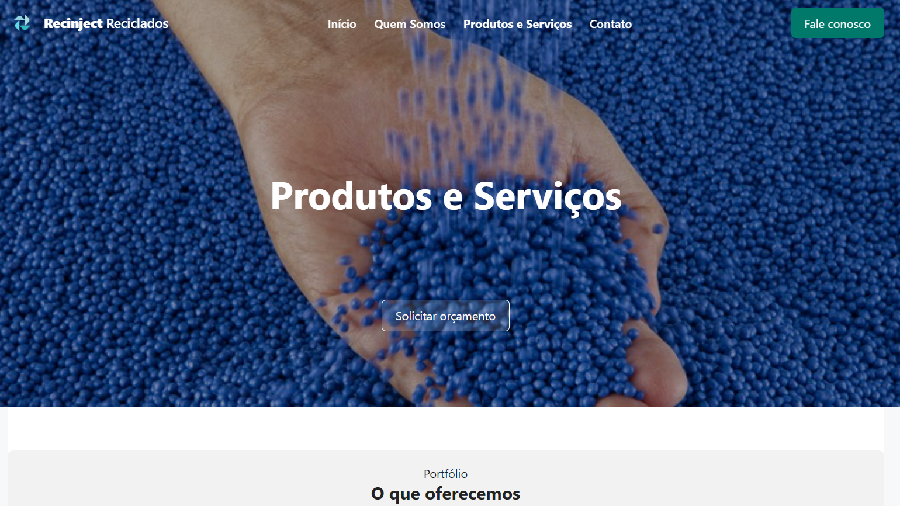
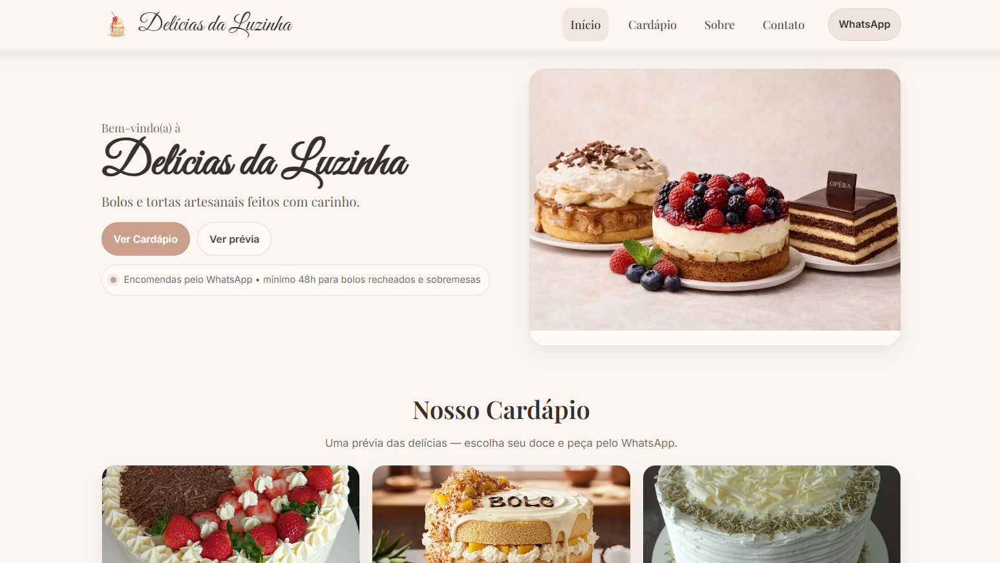

Criação de Sites
Sites modernos, responsivos e preparados para apresentar sua empresa com clareza e foco comercial.
- One Page
- Institucional
- Landing Pages
- E-commerce
A PDA Soluções ajuda empresas a serem encontradas, gerar mais oportunidades e fortalecer sua presença digital através de sites profissionais, posicionamento no Google, SEO local, sistemas web e soluções estratégicas.
Atendemos Curitiba, São José dos Pinhais e clientes em todo o Brasil.
Muitas vezes, o problema está na forma como a empresa aparece, se comunica e é encontrada no digital. A PDA ajuda a organizar essa presença para transformar visibilidade em novas oportunidades.
Serviços pensados para tirar empresas do improviso digital e criar uma presença mais clara, profissional e estratégica.
Sites modernos, responsivos e preparados para apresentar sua empresa com clareza e foco comercial.
Estratégias para melhorar a presença local da sua empresa em Curitiba, São José dos Pinhais e região.
Soluções digitais sob medida para organizar rotinas, dados, clientes, serviços e processos.
Projetos estratégicos de 60 a 90 dias com diagnóstico, direcionamento e execução orientada ao alvo.
A PDA desenvolve sites profissionais em HTML, CSS e tecnologias leves, priorizando clareza, velocidade, SEO e facilidade de publicação no GitHub Pages quando aplicável.
Ideal para empresas que precisam começar rápido, apresentar serviços e gerar contatos pelo WhatsApp.
Mais completo para empresas que precisam fortalecer autoridade, serviços, diferenciais e presença no Google.
Focada em campanhas, captação de leads, divulgação de serviços específicos e conversão.
Estrutura para venda online, catálogo de produtos ou direcionamento comercial para WhatsApp e canais digitais.
Exemplos práticos para demonstrar diferentes formatos de presença digital: página única, site institucional, site com catálogo e estrutura voltada para serviços locais.
Site simples de uma página, com apresentação direta, serviços, informações principais e botão para WhatsApp.
Ver exemplo →Site institucional para empresa de serviços, com páginas de apresentação, serviços, localização e contato. Fortalece a autoridade, serviços, diferenciais e presença no Google.
Ver exemplo →
Site empresarial com foco em apresentação institucional, serviços, autoridade e presença profissional no Google.
Ver exemplo →
Site com catálogo de produtos, pensado para facilitar a escolha do cliente e direcionar o pedido para o WhatsApp.
Ver exemplo →A maioria começa pela ferramenta. Nós começamos pelo alvo.
Como na escavação de um poço, primeiro identificamos onde está a fonte. Depois direcionamos a execução com estratégia, tecnologia e profundidade até alcançar o resultado.
Antes de criar qualquer solução, entendemos o problema real da empresa, definimos a direção estratégica e só então aplicamos as ferramentas digitais certas.
Entender o verdadeiro problema, o objetivo do negócio e as oportunidades mais importantes.
Organizar a direção estratégica, as prioridades e o plano de ação para chegar ao objetivo.
Executar soluções digitais de forma direcionada, prática e conectada ao resultado esperado.
O APPDA é o sistema desenvolvido pela PDA para prestadores de serviço e pequenas empresas que precisam organizar clientes, serviços, tarefas, financeiro, resultados e diagnósticos em um só lugar.
A PDA Soluções atende empresas que querem aparecer melhor no Google, fortalecer sua presença digital e gerar mais oportunidades através de sites profissionais, SEO local, Google Meu Negócio e soluções web.
Vamos entender o momento da sua empresa e indicar o melhor caminho: site, Google, sistema web, diagnóstico ou projeto PDA.